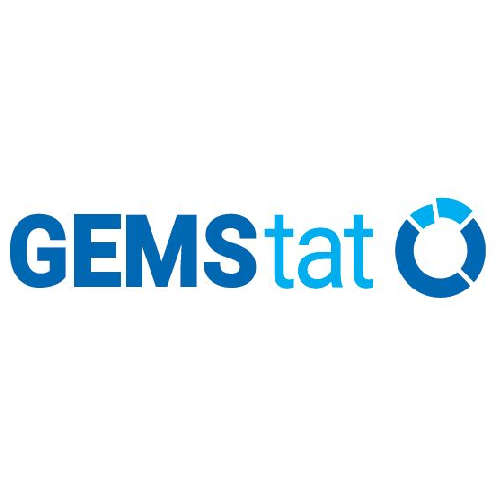

GAP-Groundwater Assessment Platform (Eawag)
GEMStat (UNEP)
GGIS-Global Groundwater Information System (IGRAC)
Water Data Portal (IWMI)
WINS-Water Information Network System (UNESCO-IHP)
Water Risk Filter (WWF)
WASH GIS Portal (UNHCR)
 Water Data Portal (IWMI)
Water Data Portal (IWMI)